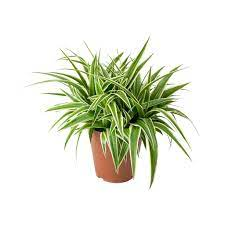

Esta página está dedicada a todo lo relacionado con las plantas,
desde consejos de cuidado hasta información detallada sobre 3 diferentes especies de plantas.
En nuestra plataforma, te adentrarás en la innovación y comodidad que ofrecen los sistemas de riego automático para tus plantas.
Imagina un mundo donde tus plantas reciben la cantidad
perfecta de agua en el momento preciso, sin esfuerzo ni preocupaciones.
Explora con nosotros cómo la tecnología se une a la jardinería para brindarte soluciones inteligentes.
Descubre los diferentes tipos de sistemas de riego automático, desde los sofisticados hasta los más accesibles,
y aprende cómo estos sistemas pueden transformar por completo la forma en que cuidas tus plantas en interiores.
Sumérgete en nuestra pagina y encontraras la informacion que no conocias acerca de estas plantas y consejos de los cuidados
que necesitara para tener tus plantas llenas de vida y luciendo espectaculares dentro de tu hogar.
¡Prepárate para liberarte de las preocupaciones de riego y disfrutar de un jardín siempre
saludable y exuberante con nuestra guía completa sobre el riego automático para plantas!
Aquí encontrarás información sobre las plantas que puedes cultivar en tu jardín.
Consejos útiles para el cuidado de tus plantas y jardín.